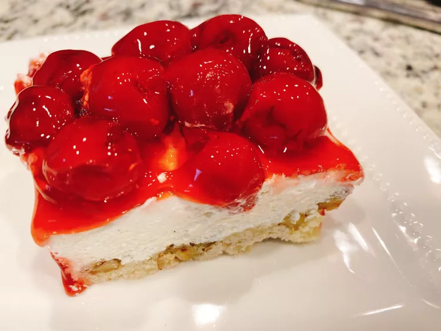

Cherry Crunch Dessert

Description
For those who love cheesecake, but don't like the heavy texture or the time it takes to make a traditional cheesecake, this cherry crunch dessert may just be what you're looking for.
Ingredients
Crust
- 1 1/2 cups all-purpose flour
- 2 tablespoons white sugar
- 1/2 teaspoon salt
- 3/4 cup butter, softened
- 1 cup chopped pecans
Filling
- 2 cups confectioners' sugar
- 1 (8 ounce) package cream cheese, softened
- 1 (12 ounce) container frozen whipped topping (such as Cool Whip®), thawed
- 1 teaspoon vanilla bean paste
Topping
- 2 (21 ounce) cans cherry pie filling
Steps
- Preheat the oven to 350 degrees F (175 degrees C).
- Whisk flour, sugar, and salt together in a medium bowl. Cut in butter with a pastry blender, a fork, or your fingers until crumbly; stir in pecans. Press crust mixture evenly into an ungreased 9x13-inch baking pan.
- Bake crust in the preheated oven until golden, about 20 minutes. Let cool.
- Meanwhile, beat confectioner's sugar and cream cheese together in a large bowl until combined. Fold in thawed whipped topping; stir in vanilla bean paste.
- Spread cream cheese filling over cooled crust; top with cherry pie filling. Refrigerate until ready to serve.